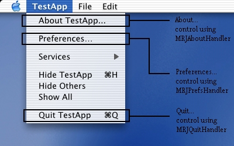

Not Recommended Document
Important: The information in this document is Not Recommended and should not be used for new development.
Current information on this Reference Library topic can be found here:
|
Detecting a Macintosh ClientPlease refer to Technical Note 2110 for the recommended detection method under both Java 1.3 and Java 1.4. Pure Java Compatibility TipsThe first half of this Technical Note covers simple changes or decisions you can make in your pure Java application which do not involve Mac-specific APIs or properties, but rather things to keep in mind in order to make your single codebase support Mac OS X just as well as other platforms. Mac OS X, Swing, and AquaThe Aqua user interface for Mac OS X is much different from those of other platforms, including Java itself. The presence of an Aqua pluggable look and feel for Swing is obviously a huge step in making your Swing applications more Mac-like. It's also a free one: short of explicit changes in your own code, Mac OS X employs the Aqua look and feel for a Swing application at launch time by default. The existence of Aqua as a look and feel leads to our first simple guideline: use Swing as the UI for your Java apps! There are many fundamental benefits that Swing provides over AWT as-is: access to Aqua removes nearly the only advantage that AWT could hold. Furthermore, mixing of lightweight and heavyweight components can have undesirable performance and drawing effects in your application. In addition to modeling your application using Swing, it is best to avoid explicitly setting the look and feel in your Java code. If you need to change the look and feel of your application on different platforms, it would be both more elegant and simpler to override the swing.defaultlaf Java property for your application. See Technical Q&A 1059 for more on setting the look and feel of a Swing application on Mac OS X. Despite automatic adoption of the Aqua appearance, there are still areas and disciplines that fall in the hands of the developer to provide a full Macintosh experience. Many of the guidelines for this Technical Note were modeled after the Aqua Human Interface Guidelines (PDF) from the Apple Developer web site. Examples of some small but important details covered in the guidelines include: * Keeping scrollbars visible at all times (see below) * Choosing and designing "Popup Menus" (JComboBoxes) * Graying (disabling) menu items * Reserved keyboard menu item shortcuts It is strongly suggested that you review this document for particulars regarding user interface design on the Macintosh. We did! JDesktopPane and Multiple Document InterfaceNearly all Macintosh applications are made up of numerous, free-floating, independent windows. While these windows remain within the context of the application, they are not contained within a parent "backing window" that serves as the bounds of the application on the screen. This is something that differentiates the Macintosh from other platforms, and should be considered when designing an application with more than one window. For this reason, we would recommend against the use of the javax.swing.JDesktopPane class, which employs the restrictive backing-window MDI model, for your application's main UI, unless absolutely necessary. An exception would be a Java application which requires a floating toolbar-like entity (described by Swing as an "Internal Utility Window") which constantly remains on top of all other windows in the application, regardless of focus. Java currently has no means of providing this other than by using JDesktopPane. You may also want to consider designing a more platform-neutral UI with a single dynamic container, similar to what Java applications like JBuilder or LimeWire utilize. If you are bringing your MDI-based application to the Macintosh from another platform, you may find that it is impossible to provide the user experience you've built without a layered-pane structure. In this case, it may be better to keep your UI as-is. The decision will be up to you as a developer. As a side note, you can implement toolbar- and palette-style controls using Cocoa-Java. However, use of Cocoa-Java would eliminate portability, and prevent you from using Swing or AWT components. We also understand that JDesktopPane-based apps are typically the only way to provide a single menubar that can control multiple windows within a given application (a paradigm that exists in the Mac OS with free-floating windows), and that this can be the driving force for choosing an MDI-based UI. The section below discusses alternatives to MDI and solutions to the multiple-frame problem in Swing. Swing Menus and Menu ItemsAnother difficulty in cross-platform Java UI development is that shortcuts and appearances for menu items tend to vary between platforms. Unfortunately, many Java programmers write their applications only with the current development platform in mind, and explicitly specify the appropriate modifier or trigger in their code. This provides difficulty in porting your application from platform to platform, as well as risking misinterpretation of what the platform's appropriate triggers are. Fortunately, there are much more elegant solutions to creating these actions on a given platform, and furthermore, they're portable! Menu Shortcuts. Menu shortcuts are often set by a developer with an explicit java.awt.KeyStroke specification. This becomes complicated when moving to a new platform with a different shortcut modifier, because new KeyStrokes will need to be conditionally created based on the current client platform. The solution here is to make use of the following AWT method: java.awt.Toolkit.getMenuShortcutKeyMask() When calling this method, the current platform's Toolkit implementation will return the proper mask for you. The work of checking for the current platform and then guessing which key is correct is done for you with this single call! Listing 1 demonstrates this below. Listing 1: Using getMenuShortcutKeyMask() to simplify menu shortcuts.
JMenuItem jmi = new JMenuItem("Copy");
/*
// Before the wonders of TN2042, all I could do was this!
String vers = System.getProperty("os.name").toLowerCase();
if (s.indexOf("windows") != -1) {
jmi.setAccelerator(KeyStroke.getKeyStroke(KeyEvent.VK_C,
Event.CTRL_MASK));
} else if (s.indexOf("mac") != -1) {
jmi.setAccelerator(KeyStroke.getKeyStroke(KeyEvent.VK_C,
Event.META_MASK));
}
*/
// This one line works for all platforms where 'c' is copy
jmi.setAccelerator(KeyStroke.getKeyStroke(KeyEvent.VK_C,
Toolkit.getDefaultToolkit().getMenuShortcutKeyMask()));
Just about every common action on the Macintosh has a keyboard equivalent that uses the command key as at least one of the modifiers, if not the sole modifier. Unfortunately, other platforms are not as consistent, and you may have some keyboard shortcuts that use the "Alt" key, for example. Since the above call only returns one generalized mask, there may still be a need to do conditional setting of key shortcuts based on the host platform. The fact that most Mac keyboard equivalents use Command will make your life a bit easier if you're bringing your application over to Windows and are worried about representing actions correctly on this platform. For a solid list of the most common and reserved shortcuts, check out the keyboard equivalents section of the Aqua HI Guidelines. Since the ALT_MASK modifier evaluates to the Option key on the Mac, Ctrl-Alt masks set for Windows would immediately become Cmd-Opt masks if you used getMenuShortcutKeyMask() in conjunction with ALT_MASK. Menu Mnemonics. Unlike other platforms, Mac OS X (Aqua) does not provide menu mnemonics, or single-key shortcuts to menus (using the Alt key) and menu items (once the parent menu is opened). Mnemonics usually appear as a single underlined letter in the menu[item]'s name. Macintosh applications have never used menu mnemonics, and we suggest applying mnemonics in a platform-sensitive manner in your code if possible, such as a single setMnemonics() method that is conditionally called when constructing your GUI. Menu Item Icons. Like mnemonics, menu item icons are also available via Swing - and functional on Mac OS X - but not a standard part of Aqua's HI Guidelines. In the interest of making your Macintosh Java application look like a Carbon or Cocoa app, you may also want to apply these icons conditionally based on platform. For more on checking which platform your application is running on, please see the Detecting a Macintosh Client section. Contextual MenusSince most platforms support contextual menus in one form or another there should be no problem in putting contextual menus in your Java application (Java refers to them as PopupMenus, which is the Aqua term for what Java calls JComboBox). The situation can become complicated across platforms, though, if one assumes that contextual menus are explicitly triggered the same way, or at the same time. On Windows, for example, the right mouse button is the standard trigger for contextual menus. With the standard Macintosh (one button) mouse, contextual menus are brought up by a Control-click. Note: A third-party multi-button mouse on a Mac will not pose a problem, as the right button is typically mapped to a Control-click action by the driver. These are two very different cases, which could result in fragmented and conditional code like the menu example above. One thing is common, however: a mouse click. To ensure that your program is interpreting the proper contextual menu trigger, regardless of platform, we again turn to the AWT to do the interpreting for us by using the following instance method: java.awt.event.MouseEvent.isPopupTrigger() The method is defined in MouseEvent because you're going to activate the context menu through a MouseListener on a given component when a MouseEvent on that component is detected. The key here, is how and when to detect the proper event: Listing 2: Using isPopupTrigger() to detect context menu activation.
JLabel label = new JLabel("I have a popup menu!");
label.addMouseListener(new MouseAdapter(){
public void mousePressed(MouseEvent e) {
evaluatePopup(e);
}
public void mouseReleased(MouseEvent e) {
evaluatePopup(e);
}
private void evaluatePopup(MouseEvent e) {
if (e.isPopupTrigger()) {
// show the popup menu...
}
}
});
Note that the above example checks isPopupTrigger() on both MOUSE_PRESSED and MOUSE_RELEASED events. This is because on the Macintosh, the popup trigger is set on MOUSE_PRESSED, while Windows sets it on MOUSE_RELEASED. For portability, both cases should be handled. Placing and Painting ComponentsSwing UIs are constructed by combining often-complicated nestings of containers and components. When working on a single platform, a developer can easily lose sight of what his or her UI design may look like on other platforms. As the term suggests, different look and feel's look and feel differently. Font sizes, button sizes and shapes, background and foreground colors, etc. can all vary differently between different look and feel's on different platforms. It is this fact that makes it extremely important to use abstracted and general methods to place, size, and paint your components. Layout Managers. Using layout managers may be a no-brainer for many developers, but many programmers do attempt to fine-tune their applications by setting explicit X and Y coordinates for their controls. If, at any point, such an application is run under a new look and feel, and/or on another platform, this can result in a disasterous UI, riddled with components painting on top of each other and running off the edge of a container, among other things. It is generally unsafe to assume that placing buttons and controls at explicit coordinates is portable, as different sizes for controls across look and feel's can cause your UI to suddenly look nothing like what you intended. The use of AWT layout managers solves this problem by making use of abstracted location constants (relative grid coordinates in GridLayout, directional in BorderLayout, etc.). The exact placement of these controls will be determined by the layout manager while taking the sizes of each individual component into account, yet still maintaining their placement within the container relative to one another. Component Sizes. Setting explicit component sizes can also be a dangerous habit. Each look and feel is likely to have different font styles and sizes. These font sizes will most certainly affect the required size of the component containing the text, and moving explicitly-sized components to a new look and feel with a larger font size can cause big problems. The safest means of keeping your UI components a proper, minimal size in a portable manner is to simply call myComponent.setSize(myComponent.getPreferredSize()); where myComponent is your UI component object. Most layout maangers and containers respect a component's preferred size, making this call unnecessary in many cases. As your UI becomes more complicated, however, you may find this call handy for containers with many child components. Component Colors. Since a given look and feel tends to have universal coloring and styling for most, if not all of its controls, developers may be tempted to create custom components which match the look and feel of standard UI classes. This is perfectly legal, but the careless developer may be setting an explicit color which they think matches well with the current look and feel. Changing the look and feel may result in a very odd-looking button somewhere in the container. The best way of ensuring that your custom control matches well with other standard components is to query the UIManager class for the desired colors or icons. A perfect example of this would be a custom Window object that contained some standard lightweight components but wants to paint its uncovered background to match that of the rest of the application's containers and windows. To do this, the developer would call: myPanel.setBackground(UIManager.getColor("window")) This will return the color appropriate for the current look and feel. The other advantage of using these standard methods is that they will also provide more specialized backgrounds and icons that are not easily reconstructed (such as the striped background used for Aqua containers and windows, which is what the above call will return). Windows With Scrollbars (Using JScrollPanes)One specific example of UI design recommended by the Aqua HI Guidelines involves windows that use scrollbars to navigate their contents. By default, a Swing JFrame has no scrollbars, regardless of how it is resized. The easiest way to provide scrollable content in a frame is to place your frame's components inside a JScrollPane, which can then be added to the parent frame. In the default behavior of JScrollPane, however, vertical and horizontal scrollbars only appear if they are necessary - in other words, if not all content in the pane is visible. While this may be consistent with some platforms, it contradicts the Aqua HI Guidelines which suggest that a window that may become scrollable show its scrollbars at all times. This is to prevent the confusing UI of scrollbars appearing and disappearing as needed, which creates the illusion of the window's viewable area shrinking and expanding. We suggest that if you are using a JScrollPane in your Java application, set the JScrollPane's scrollbar policy to always display the scrollbars, even when disabled. Listing 3 demonstrates how this can be done with the standard Java API. Listing 3: Setting JScrollBar policies to match Aqua HI Guidelines. JScrollPane jsp = new JScrollPane(); jsp.setVerticalScrollBarPolicy(JScrollPane.VERTICAL_SCROLLBAR_ALWAYS); jsp.setHorizontalScrollBarPolicy(JScrollPane.HORIZONTAL_SCROLLBAR_ALWAYS); You can of course choose to do this conditionally based on the host platform, as the AS_NEEDED (default) policy may more closely resemble other platforms. Such a change may just go unnoticed on other platforms with fewer UI specifications. Ultimately the choice is up to the developer. Keep in mind that while always visible, the scrollbars will appear solid and without scrollers if the entire JScrollPane's content is visible (see window behavior in the Finder for a quick example). File Dialogs in AquaThe java.awt.FileDialog and javax.swing.JFileChooser classes are the two main mechanisms to create quick and easy access to the file system for the user of your Java application. JFileChooser is the newer, abstracted, more-customizable successor to the older, native-derived AWT FileDialog. Each has its advantage over the other. In the interest of making your application look as "native" as possible, it is typically recommended that developers use the AWT FileDialog classes to present file access to the user. The difference between the two is especially visible when using Aqua on Mac OS X, where file dialogs in Carbon and Cocoa applications use a "column" style of navigation. This is adopted automatically by the AWT FileDialog, while the Swing JFileChooser uses a navigation style different than that of typical Mac OS X Applications. However, the many functional advantages of JFileChooser may outweigh this suggestion. The choice is up to the developer. Please note that there is no consequence to mixing a heavyweight FileDialog with an otherwise-Swing application, as the dialog is modal and will always draw on top of the other visible components. Handling .pkg and .app files. Handling Mac OS X application bundles and installer packages inside your Java application is an additional concern. Since a .app or a .pkg file is technically a directory, Java applications using JFileChooser or FileDialog may initially recognize them as such and allow inappropriate navigation. Apple has provided properties for both of these classes that can be used to control how .app bundles as well as .pkg install packages (both actually directories) should be handled. FileDialog. The AWT FileDialog class can be set to treat .pkg and .app files as non-navigable using the system runtime property com.apple.macos.use-file-dialog-packages Possible values are true (treats .pkg and .app as files) and false (as folders, the default behavior). The property can be set using the standard mechanisms for runtime system properties as explained in Tech Note 2031, and once set will be applied to all FileDialog instances. This allows for developers to alter their AWT dialogs for Aqua without any code change. If your appliction requires different instances to behave differently, you can either set the property to true or false at runtime as necessary using System.setProperty(), or you can make use of the per-instance client properties in JFileChooser. JFileChooser. There are two properties for dictating the treatment of .app and .pkg files when using JFileChooser. Both properties need to be set programmatically in your application (you will need to make changes to your code). The properties for .pkg installer packages and .app application bundles, respectively, are JFileChooser.packageIsTraversable JFileChooser.appBundleIsTraversable Possible values for these properties are always (treat as folders, the default behavior) and never (treat as files). These properties are set on a per-instance basis via the putClientProperty() instance method inherited from JComponent. There are a few known issues that currently exist with using these properties: * Setting JFileChooser.packageIsTraversable to never will currently do so for both .pkg and .app files * Setting JFileChooser.appBundleIsTraversable to never will cause packageIsTraversable to be ignored, effectively causing the default behavior of navigable .pkg files in JFileChooser. In other words, you may currently use these properties to make only .app files, or both .app and .pkg files, navigable. Note: The JFileChooser properties only have an effect when using the Aqua look and feel in Swing, since it is the only look and feel which Apple controls. Macintosh-Specific TailoringThe next few sections discuss changes or design decisions you can make to your Java application with the specific goal of making it as close as possible to an Aqua-compliant Mac OS X application. Some of these changes will have no effect on other platforms, while others may require conditional packaging or execution of code in your application for multiple platforms. Using a Macintosh MenubarOne difference between the Java UI model and that of the Macintosh is that in Swing, the application's menubar is applied on a per-frame (window) basis. Similar to the Windows model, the menubar appears directly under the frame's titlebar. This is different from the Macintosh model, where the application has a single "screen" menubar which controls all of the app's windows. To quickly solve this problem, a runtime property has been added: com.apple.macos.useScreenMenuBar This property can have a value of true or false; if undefined, the standard Java behavior equivalent to a value of false is used. When read by the Java runtime at application startup, a given JFrame's JMenuBar will be placed at the top of the screen, where a Macintosh user would expect it to be. Since this is a simple runtime property that must be used by the host VM, setting it in your application will have no effect on other platforms that will not even check for it. It is important to note that a JMenuBar attached to a JDialog will not appear at the top of the screen as expected when setting this property, but rather inside the dialog (as if the property were not set). You will notice that by default the parent JFrame's menubar shows through disabled when a JDialog without a menubar is focused. If you find the need to attach menus to a dialog window, you may want to reconsider your UI - a dialog should be informational or present the user with a simple decision. A window with enough functionality to necessitate a menubar may be better off existing as a JFrame. A quick run-through on enabling the screen menu bar is also available from Q&A 1003. Unfortunately, this only solves part of the problem (visual placement); the fundamental issue of "one menubar per window" still exists. In other words, the menu will appear at the top of the screen, but only when the specific window it was assigned to is in focus. If your application has multiple windows, and a window other than the one holding the menubar is focused, the menubar will vanish! The Aqua HI Guidelines state that the menubar should always be visible in an application; even an insignificant window such as an alert dialog should still show the menubar (though you may want to disable the menus). There are a few ways around this problem, but the most popular involves creating and using a menu factory which will generate an identical menubar for each free frame in your application. This way, when focus changes to each frame, it will still have a menubar attached at the top of the screen. The Window MenuOne of the directives in the Aqua HI Guidelines is that all Mac OS X applications should provide a Window menu to keep track of all currently open windows. Implementing such a feature in Java Swing is not impossible, but it requires, among other things, making use of the previous two suggestions in this Technical Note (Macintosh menubar, free-floating frames). While you can implement a Window menu without these two prerequisites, they all work hand-in-hand in allowing your Java app to be as Mac-like as possible. Similar to the "global menubar" issue, Swing's current architecture makes it difficult to have multiple menus and menu items that are constantly updated and synched with the current state of the application. Through the use of Actions and PropertyChangeListeners, however, most of this functionality can be achieved with what is available today. A Window menu should contain a list of currently active (visible) windows, with the corresponding menu item checked if a given window is currently selected to the foreground. Likewise, selection of a given Window menu item should result in the corresponding window being brought to the front. New windows should be added to the menu, while closed windows should be removed. The ordering of the menu items is typically the order in which the windows appeared (See the Aqua HI Guidelines for a full explanation). The Application MenuAny Java application that uses AWT/Swing, or is packaged in a double-clickable .app file, will automatically be launched with an Application Menu similar to native applications on Mac OS X. This application menu, by default, contains the full name of the main class as the title. This name can be changed using the com.apple.mrj.application.apple.menu.about.name application property, or the -Xdock:name command-line property. According to the Mac OS X Aqua HI Guidelines, the name you specify in the application menu should be no longer than 16 characters. See the Technical Note on Java Runtime Properties for Mac OS X and the Aqua HI Guidelines for more. The next step to customizing your application menu is to actually have your own handling code called when an item in the application menu is selected. Apple has provided a means for this through special Java interfaces in the com.apple.mrj package. Each interface has a special callback method that is called when the appropriate application menu item is selected. As of the Java 1.3.1 Update 1 for Mac OS X, the following callback interfaces for the application menu are available: * MRJAboutHandler - Allows the program to react to selection of the About <appname>... menu item * MRJPrefsHandler - For the Preferences... menu item * MRJQuitHandler - For final clean-up logic when the Quit <appname> menu item is selected. Figure 1: Application menu for a Java application on Mac OS X.  To handle a given application menu item: 1. Implement the appropriate handler interface 2. Define the appropriate "handler" method in your implementation (handleAbout(), handlePrefs(), handleQuit()) 3. Register your handler using the appropriate static methods in the com.apple.mrj.MRJApplicationUtils class (registerAboutHandler(), registerPrefsHandler(), registerQuitHandler()) To see an example of these implementations, simply open a new Java Swing Application in Project Builder. There is also a Technical Q&A demonstrating proper use of the MRJQuitHandler in Mac OS X 10.1 and 10.2 (Jaguar). Accommodating the Application MenuWe have already discussed the addition of the application menu to Java applications on Mac OS X, and how to take advantages of the menu items within it. If your application is to be deployed on other platforms, where preferences/quit/about access will need to be placed elsewhere on the menubar (in a "File" or "Edit" menu, for example), you may want to make this placement conditionally. While it would not be harmful to have two different "Preferences" menu items, or an "Exit" menu item as well as the MRJ "Quit" item, for example, it may be less confusing to Mac users if the items familiar to the application menu were there and nowhere else. This is a minor change that can make a large difference in the look and feel of your Mac OS X Java application. Additional MRJ HandlersIn addition to the interfaces provided for handling of the application menu, the current Java release on Mac OS X provides two functional and supported MRJ Handlers: * MRJOpenApplicationHandler - respond to an "Open Application" Apple Event * MRJOpenDocumentHandler - respond to double-clicking a supported document or a drag onto the app's icon These handler interfaces are intended to enhance a Java application's behavior in the Mac OS X Finder, and are utilized in the same manner as the application menu interfaces described above. Registering the file types your application can open from the Finder using MRJOpenDocumentHandler is done with additional keys at the top level of the Info.plist file of an application bundle, in the same manner as Cocoa or Carbon applications. Please see the CFBundleDocumentTypes section of the Bundle Keys documentation for more. Launching Java ApplicationsPerhaps the most immediate and obvious aspect of the Macintosh experience is that an application should be launched via a double-clickable icon, or package. In the interest of being a "good Mac OS X citizen", a Java application should not require use of the command line to be launched. There are a few ways to make your Java application double-clickable for the end user: * Project Builder: The easiest way to make a double-clickable Java application is to start your project from the beginning using Project Builder. An .app package will be constructed around your java libraries automatically during the build process. Project Builder is installed with the Mac OS X Developer Tools. * MRJAppBuilder: This is probably the most attractive method for applications already written using other tools and/or on other platforms. MRJAppBuilder will take all required Jar files and arguments and construct an .app package for Mac OS X. It is installed with the Mac OS X Developer Tools. * Java Web Start: Beginning with Mac OS X 10.1, Java Web Start was installed with the system. Web Start is a fantastic way of deploying your applications in a simple manner over the web, with a simple click of a web link. In its current implementation, a JNLP file is saved to the user's downloads directory which can be double-clicked, triggering Web Start to launch the application, and even download a newer version if one is available at the original URL. For more about Web Start, see Sun's website or open up Java Web Start (located in /Applications/Utilities/) and try out the sample application. * Manifest Files: If your application is fully contained in a single Jar file, with a proper manifest file defining the main class, the jar itself can simply be double-clicked in the Mac OS X Finder to launch the application. The .app approach, of course, is the most Mac-like means of packaging your Java application. Setting A Dock IconAny application that launches under Mac OS X has a corresponding icon in the Finder Dock. This goes for graphical Java applications on Mac OS X, as well as non-graphical apps which are packaged in a .app bundle. A default Java icon is provided for placement in the Dock, but a developer can specify a custom icon for his/her Java application using one of two methods: 1. Terminal: use the -XDock:icon launch argument 2. Bundle (.app): include a .icns file in the bundle's Contents/Resources/ directory This means that applications deployed using double-clickable jar files cannot customize their Dock icon, which is why it is recommended that the other deployment mechanisms listed above be considered. Unfortunately, because of the way Java Web Start launches its applications, it is currently impossible to do this via Java Web Start as well. For more on the -XDock argument, please see the Technical Note on Java Runtime Properties for Mac OS X. SummaryThis Technical Note has glanced upon the areas in which a developer can bring the user experience advantages of Mac OS X to Java applications running on the platform. From runtime properties, to compatibility best-practices, to Mac-specific tuning and tweaks, we hope developers will be able to take advantage of what's available to make Java applications on Mac OS X look as "at-home" as possible. Document Revision History
Posted: 2005-04-01 | ||||||||||||
|